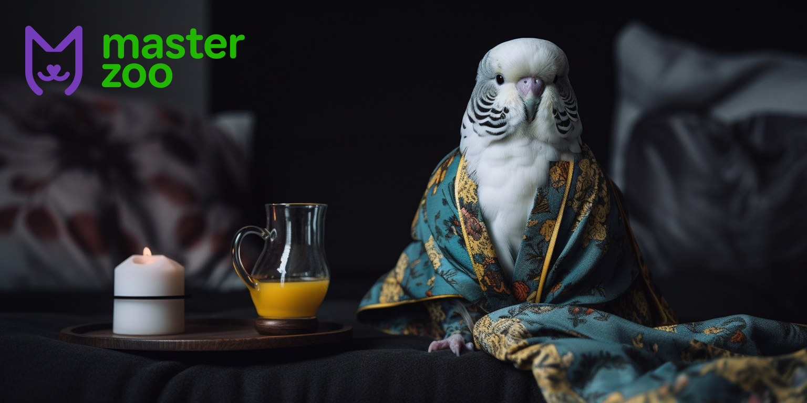
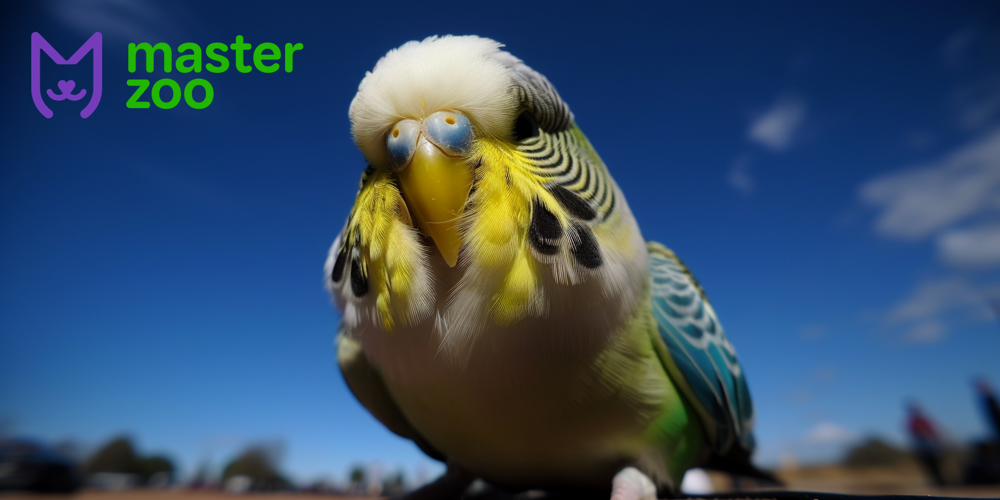

Люди часто вибирають собі в якості пернатих друзів милих і красивих пташок. Хтось віддає перевагу амадинам
або канарейкам. Але найпопулярнішими домашніми птахами залишаються папужки, зокрема, хвилясті папуги.
Приваблює в папужках не тільки забарвлення, адже є сині, зелені, жовті особини.
Це дуже красиві, веселі та розумні птахи, які до того ж радують тривалістю свого життя. І саме ця причина
часто стає головною при виборі хвилястих папужок, адже ми всі дуже любимо своїх пернатих друзів і перенести
смерть улюбленця буває важко. А папуги в домашніх умовах можуть жити до 15-20 років. Головне забезпечити їм
правильний регулярний догляд і створити максимально комфортні умови для життя.
Те, скільки живуть хвилясті папужки в домашніх і природних умовах, сильно відрізняється. Вдома для птахів
можна створити значно сприятливішу обстановку і продовжити їм життя як мінімум на кілька років. Комфорт і
правильне харчування дадуть можливість папужкам не тільки жити довше, а й бути веселими, спілкуватися з вами
і проявляти свій унікальний характер. Тому навіть існує думка, що хвилястим папужкам навіть більше підходить
життя в будинку або квартирі, ніж у природі.
Хвилясті папужки родом з Австралії. І навіть у природних для себе умовах проживання ці птахи живуть відносно
недовго. У середньому, хвилясті папужки живуть у природі 4-6 років, рідкісні особини можуть дожити до 8
років. І виною цьому різні чинники.
- Хижаки;
- Брудна вода;
- Погода;
- Нестача їжі;
- Агресивна поведінка в період гніздування;
- Епідемії;
- Відсутність пари.
Для хвилястих папуг дуже важлива достатня кількість води та їжі. Голодувати їм категорично заборонено. Якщо
хоча б один день птах не їстиме, то наступного дня в нього вже не буде сил, щоб знайти собі їжу. І в
більшості випадків таке голодування закінчиться для папуги смертю. Їхній організм практично не передбачає
запаси поживних речовин і наїдатися про запас хвилясті папужки не вміють.
Наявність води ще більш важлива для цього виду птахів. Тому що у хвилястих папужок досить висока температура
тіла. Також вони відрізняються швидким обміном речовин, а раціон містить переважно сухий корм. Тому без води
вони не можуть прожити й дня.
Скільки живуть хвилясті папуги вдома
У домашніх умовах хвилясті папужки живуть як мінімум на кілька років довше. Якщо папужки живуть у клітці, то
тривалість їхнього життя в середньому становить 8-9 років, але може досягати і 15-20 років. Але їхнє
довголіття залежить від того, наскільки правильно й уважно до них ставляться їхні власники.
Також на тривалість життя хвилястих папужок вдома впливає те, що вони не самотні. Эти птицы лучше и
счастливее живут в парах. Даже не имеет значения, живут ли они с особью противоположного пола и создают
пару, или просто другой попугайчик составляет им компанию. А в случае одиночного содержания, волнистые
попугаи очень любят и ценят общение со своим хозяином, и это действительно делает их счастливыми и
продлевает жизнь.

У природі хвилясті папужки часто гинуть від нападів хижаків, погодних умов або нестачі води та їжі. А в
домашніх умовах створити їм максимально сприятливі умови для довгого життя зовсім нескладно.
- Правильне і повноцінне харчування. Воно має бути збалансованим, тому найкраще використовувати як основу
раціону готовий корм для папуг. Він складається з суміші насіння і злаків, доповненої вітамінним
комплексом. Але крім цього важливо давати папугам свіжі фрукти, овочі та зелень. Побалувати улюбленця
також можна корисними ласощами: паличками, мінеральними речовинами і ягодами. Не забувайте про постійний
доступ до свіжої води.
- Простора і зручна клітка. Це будиночок для птахів, і клітка для папуг має бути комфортною та обладнаною.
У ній обов'язково ставлять поїлку і годівницю, розміщують іграшки, дзеркальця, гойдалки і жердинки.
Хвилясті папуги дуже активні. І для проведення дозвілля їм необхідні розваги в клітці. Також варто
встановити в клітці посудину з водою, в якій папуга зможе купатися.
- Підтримка чистоти. У клітці потрібно регулярно прибирати. Цілком клітку для папуг миють раз на два
тижні. Але прибирати піддон клітки, мити годівницю і поїльник треба щодня. Іграшки, дзеркала і жердинки
миють не рідше 1 разу на тиждень.
- Польоти поза кліткою. На те, скільки живуть папуги, впливає їхня можливість прогулюватися поза своїм
житлом. Хоча б раз на день варто випускати папужку політати по будинку або по квартирі. На цей час
потрібно щільно закрити вікна та двері, а також, якщо вдома також проживає кіт, собака або інший хижак,
забезпечити безпеку птаха або ізолювати від нього інших тварин.
- Увага і спілкування з папугою. Хвилясті папужки в парі живуть довше, ніж на самоті. Також разом вони
будуть більш активними та веселими. Якщо у вас немає можливості поселити двох птахів, то приділяйте
багато уваги своєму папужці, грайтеся з ним і проводьте разом час.
- Правильне розташування клітки. Вона має бути достатньо освітлена, але рекомендується уникати потрапляння
прямих променів сонячного або штучного світла в клітку. Також не можна розміщувати клітку на протязі або
поруч із побутовою технікою та опалювальними приладами. Приміщення, де живуть хвилясті папужки, має бути
чистим, без різких запахів і диму.
- Відпочинок і сон. Для комфортного і тривалого життя хвилясті папуги повинні жити відповідно до
природного для них ритму. Оптимальним для них буде засинати із заходом сонця і прокидатися зі світанком.
Якщо ж забезпечити це немає можливості, накривайте клітку з птахом тканиною, коли настає ніч.

Хвилясті папужки - дуже активні та допитливі. Вони люблять досліджувати навколишній світ і через це іноді
можуть травмуватися або померти. Тому варто подбати про те, щоб виключити небезпечні для папуги фактори.
Серед поширених хвороб хвилястих папужок виділяють артрит, ожиріння, проблеми з нирками і пухлини. Найбільш
схильні до них птахи старше 7 - 10 років. Мінімізувати ризик розвитку цих захворювань допоможе правильний
догляд і повноцінне дозоване харчування, а також активне проведення часу папуги і польоти за межами клітки.
Хвилясті папужки - треті за популярністю домашні тварини після кішок і собак. І це не зумовлено лише їхньою
красою. Це чудові товариші з яскравим веселим характером. Тому всі, хто має вдома такого компаньйона, прагне
забезпечити йому довге та щасливе життя.
Багато в чому те, скільки живуть хвилясті папуги, залежить від догляду за ними. А він, як бачите, зовсім не
складний. Слід тільки підтримувати чистоту вдома і в клітці у птаха, подбати про розваги та раціон папуги, і
приділяти йому достатньо часу. Натомість він проявить усі грані своєї пухнастої особистості та створить у
вас вдома неперевершену атмосферу! Спільне проведення часу забезпечить вам нерозривний зв'язок і розуміння з
папужкою, і він міцно займе місце у вашому серці, так само, як і в його!